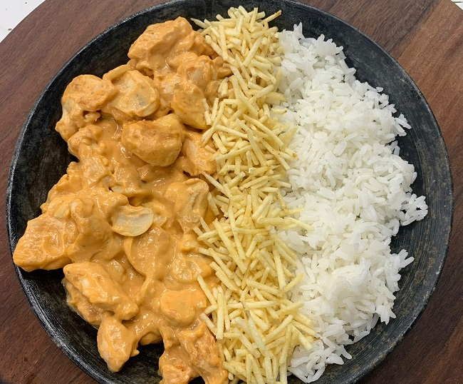

Estrogonofe de Frango

Ingredientes
- Peito de frango em tiras
- Mostarda
- Ketchup
- Creme de leite
- Batata palha
Como preparar:
- Tempere o frango e leve para dourar
- Coloque a mostarda e o ketchup
- Adicione o creme de leite quando ferver
- Sirva com batata palha
Bolo de Cenoura

Ingredientes
- Farinha de trigo
- Ovos
- Cenouras
- Leite condensado
- Chocolate
Como preparar:
- Bata o açúcar junto das gemas e cenouras trituradas
- Adicione a farinha de trigo e misture bem
- Enquanto a massa está no forno, faça a calda com o leite condensado e chocolate
- Cubra o bolo com a calda enquanto quente
Pão de Queijo
Ingredientes
- Ovos
- Queijo parmesão
- Polvilho
Como preparar:
- Bata todos os ingredientes juntos no liquidificador
- Unte a sua forma com óleo ou manteiga e despeje a massa
- Asse de 15 a 20 minutos